Cálculo de iluminancias
Niveles de luz en cada plano de trabajo, con mapas de isolíneas y valores punto a punto.
Antes de instalar una sola luminaria, calculamos cómo se comportará la luz en tu espacio. Proyectos de iluminación a medida, con resultados verificables y el acompañamiento de un equipo con más de 20 años en el sector.
Cualquiera puede venderte una lámpara. Lo que nos diferencia es todo lo que ocurre antes: analizar el uso de cada espacio, calcular niveles y uniformidades, comprobar la normativa y ajustar la solución a tu presupuesto. Así sabes lo que vas a obtener antes de comprar, sin sorpresas en obra.
Niveles de luz en cada plano de trabajo, con mapas de isolíneas y valores punto a punto.
Control de la uniformidad (Uo) y del deslumbramiento (UGR) para que la luz sea cómoda, no solo suficiente.
Verificación según la UNE-EN 12464-1, el CTE DB HE-3 y la UNE-EN 1838 de alumbrado de emergencia, documentada en el informe.
Potencia instalada, VEEI, consumo anual y LENI, para justificar el ahorro y dimensionar bien la instalación.
Visualiza el espacio iluminado antes de construirlo y decide con imágenes, no con suposiciones.
La posición de cada luminaria en AutoCAD, con su referencia y el listado de cantidades listo para obra.
Nos cuentas el proyecto: planos, uso de cada espacio, estética buscada, plazos y presupuesto.
Reproducimos el espacio en DIALux evo con su geometría real, sus materiales y sus reflectancias.
Probamos distintas soluciones hasta dar con el equilibrio entre luz, consumo y coste.
Recibes el informe técnico, los renders y los planos, y lo revisamos juntos.
Suministramos el material, resolvemos las dudas de la instalación y verificamos el resultado.
Estudio lumínico completo de un polideportivo: salas de actividades, piscinas, vestuarios y zonas de paso. Debajo, el resultado de una de sus salas.
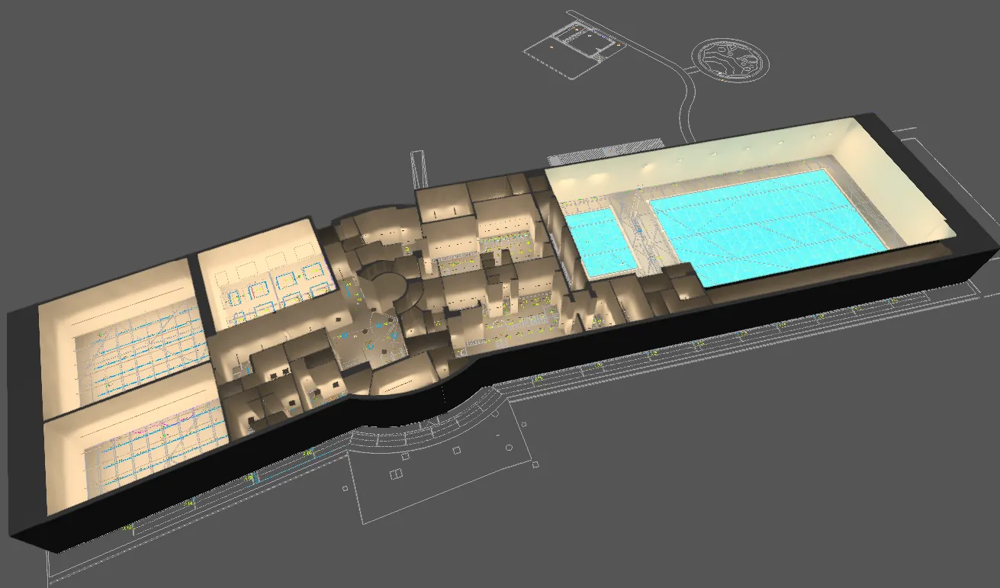
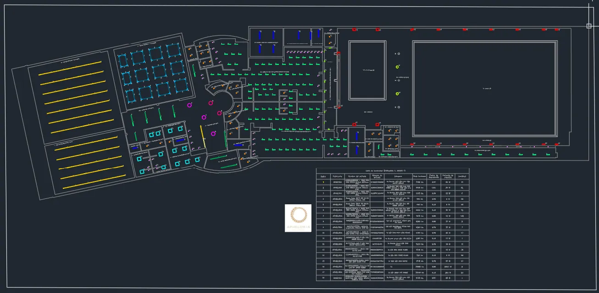
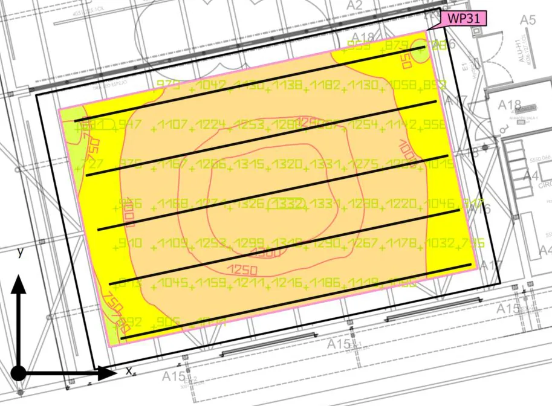
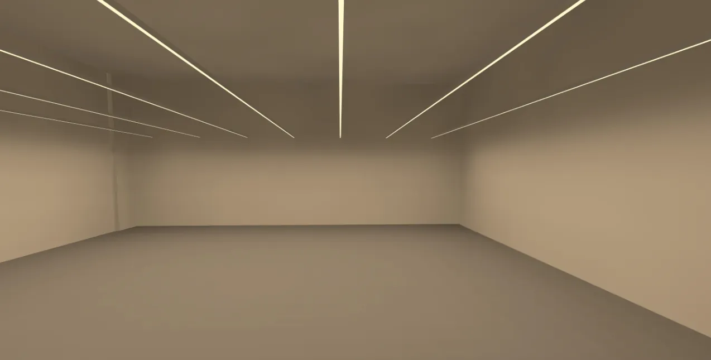
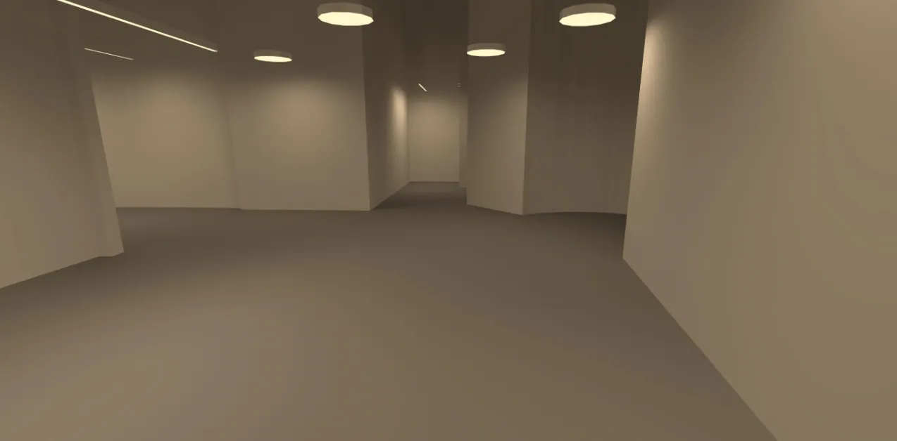
| Parámetro | Calculado | Exigido |
|---|---|---|
| Iluminancia media | 1105 lx | ≥ 500 lx |
| Uniformidad (Uo) | 0,63 | ≥ 0,60 |
| Consumo anual | 1596 kWh/a | máx. 4050 kWh/a |
| LENI | 13,8 kWh/m²·a | máx. 35 kWh/m²·a |
Perfil de uso: aula, actividades generales. Valores exigidos según la UNE-EN 12464-1.
Comercio, hostelería, oficinas, vivienda o exterior: cada espacio pide una luz distinta. Estos son algunos de los proyectos en los que hemos trabajado.
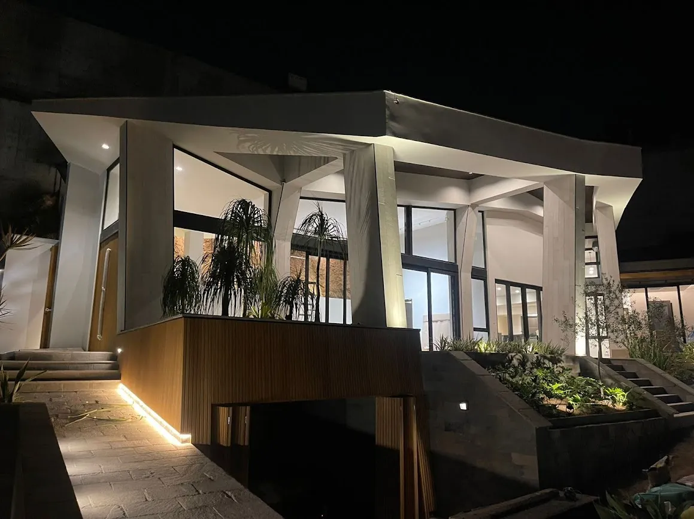
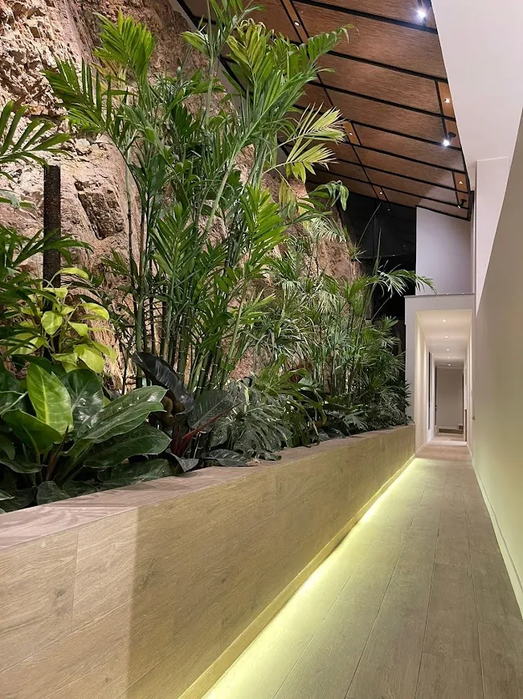
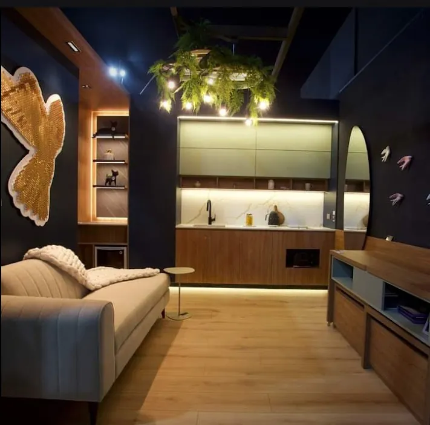
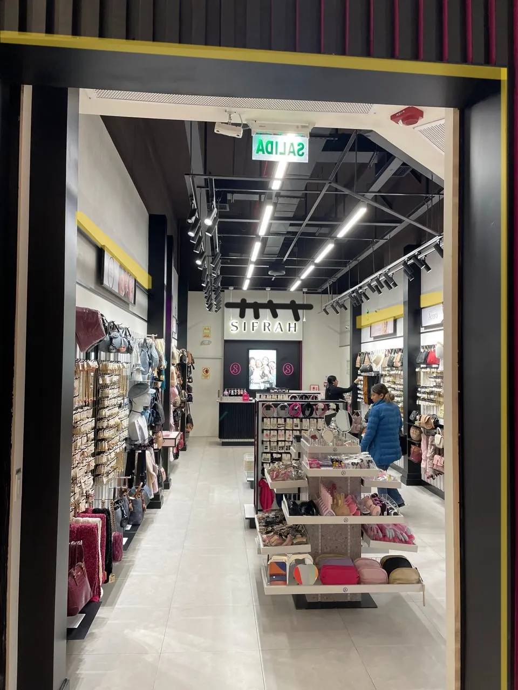
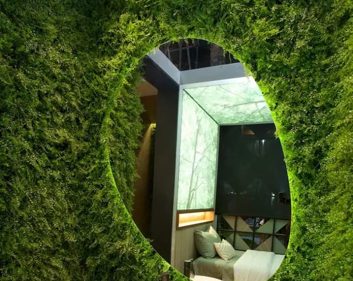
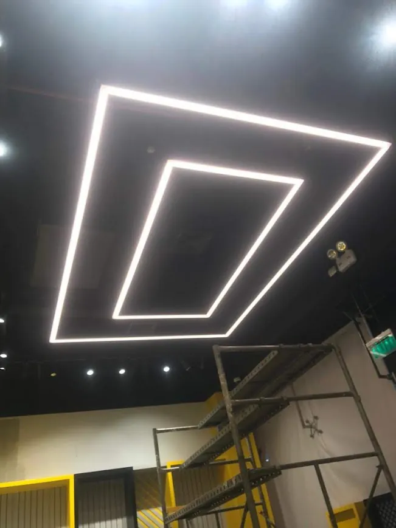
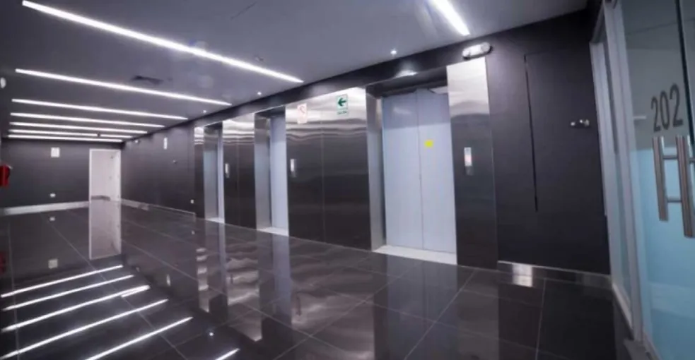
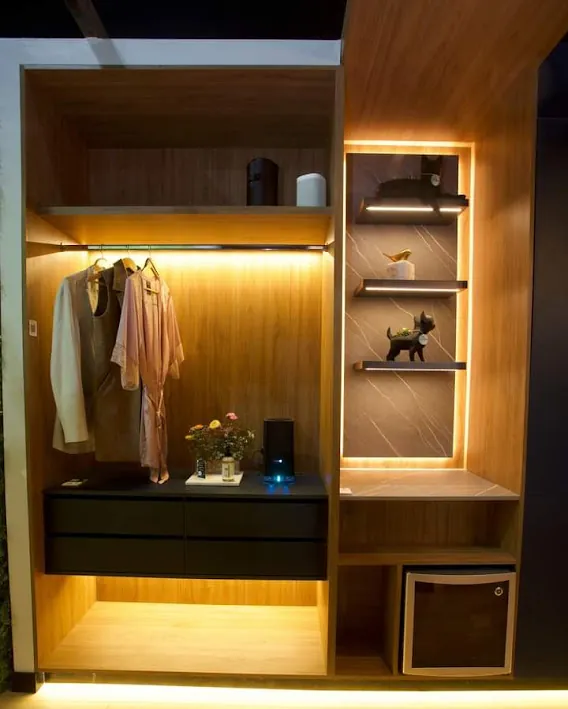
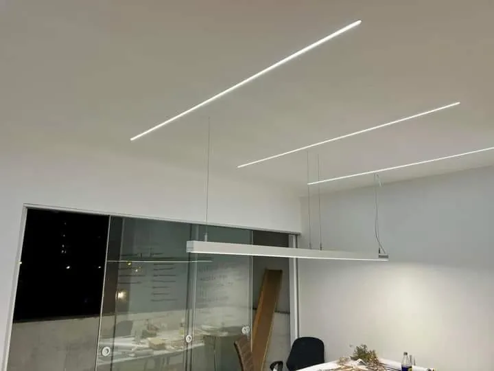
Hemos resuelto proyectos de todas las escalas: comercio, oficinas, industria, intercambiadores de transporte y edificios públicos.
Si el proyecto lo pide, adaptamos la luminaria: medidas, potencias, ópticas o acabados especiales.
El mismo equipo hace el estudio, suministra el material y te acompaña en obra. Sin intermediarios.
Proponemos alternativas y comparamos opciones para que decidas con datos: luz, consumo y coste.
Envíanos los planos y cuéntanos qué necesitas. Estudiamos tu caso y te proponemos la mejor solución, sin compromiso.